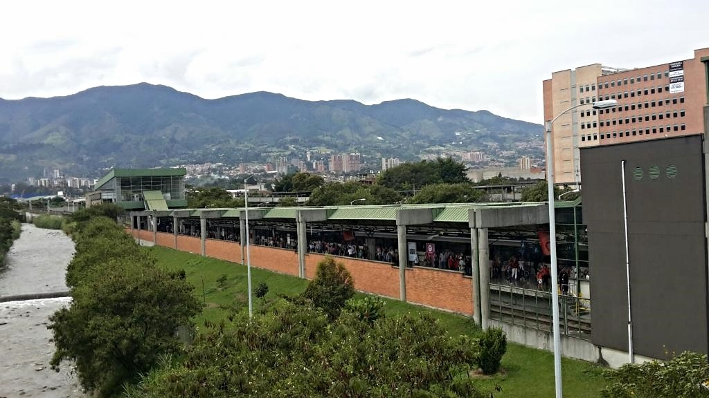
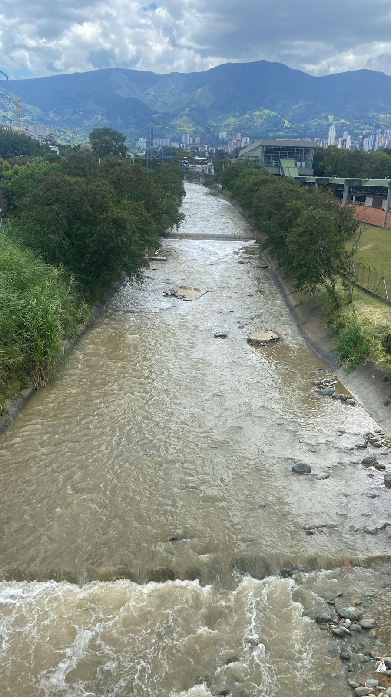
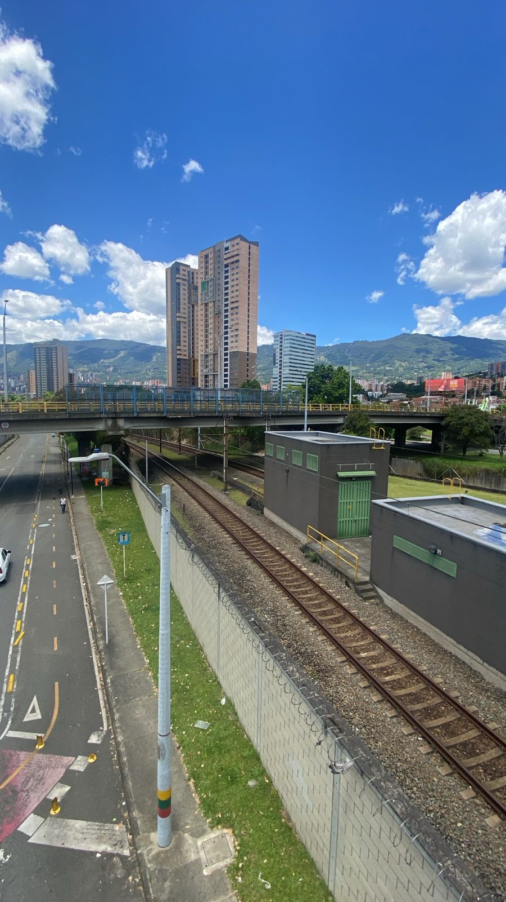
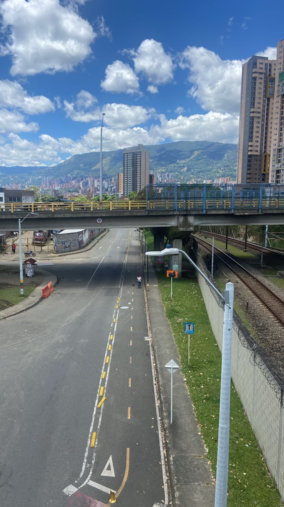
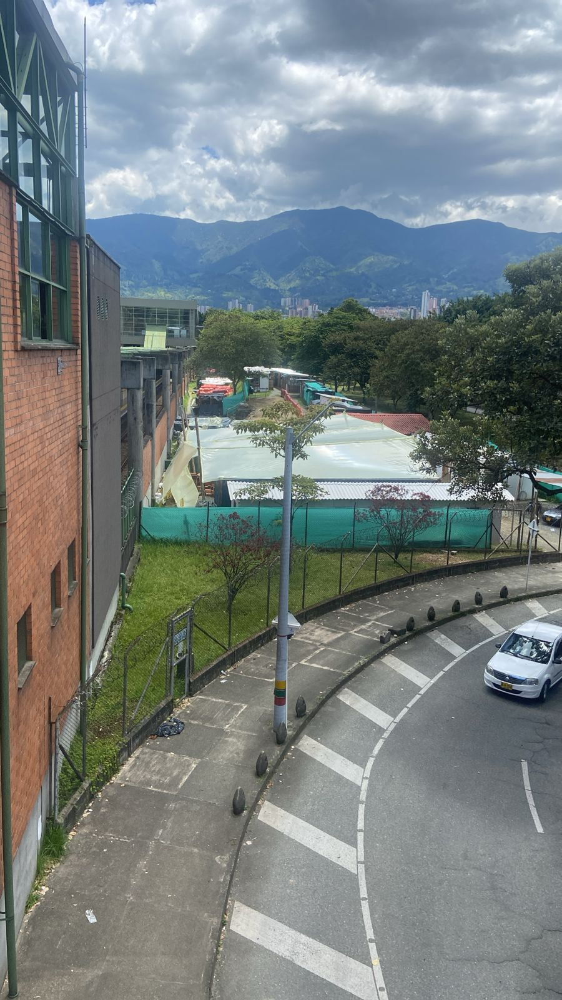
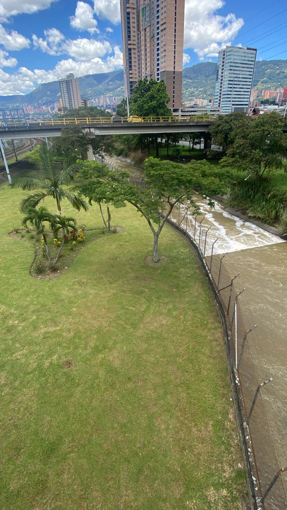
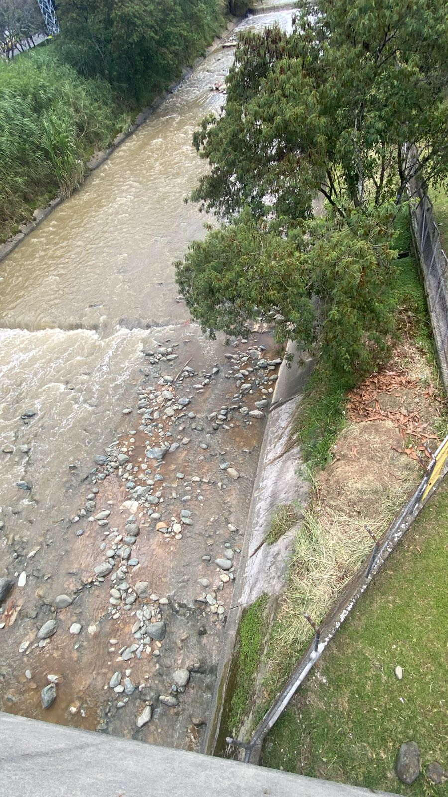
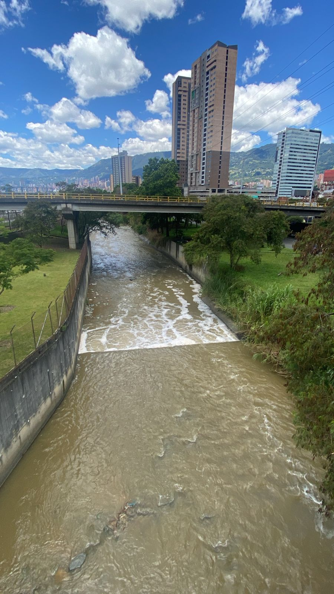
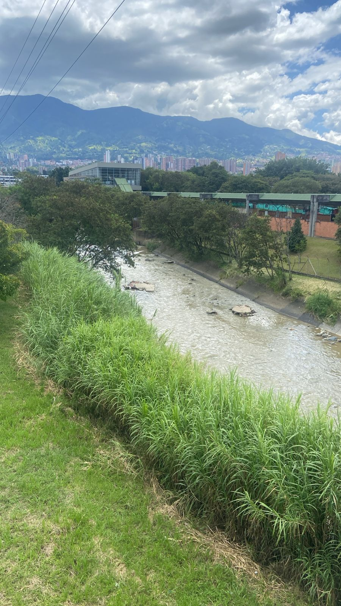
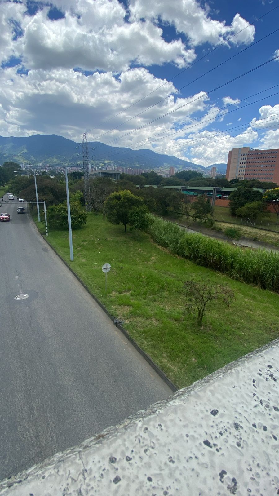

Documentación Visual
📸 Registro del Corredor Itagüí-Aguacatala

🚇 Estación Metro Itagüí

🌊 Río Medellín

🏭 Zona Industrial

🚇 Corredor del Metro

🚗 Tráfico Vehicular

🚇 Estación Aguacatala

🌆 Paisaje Urbano

🏗️ Infraestructura

🌿 Entorno Ambiental

📸 Vista Panorámica
🎨 Bocetos y Conceptos
📐 Bocetos Digitales
Bio Máquina
Bio Máquina
🎨 Moodboard
Visual del Proyecto
Visual del Proyecto

Sistema de Filtración Biológica